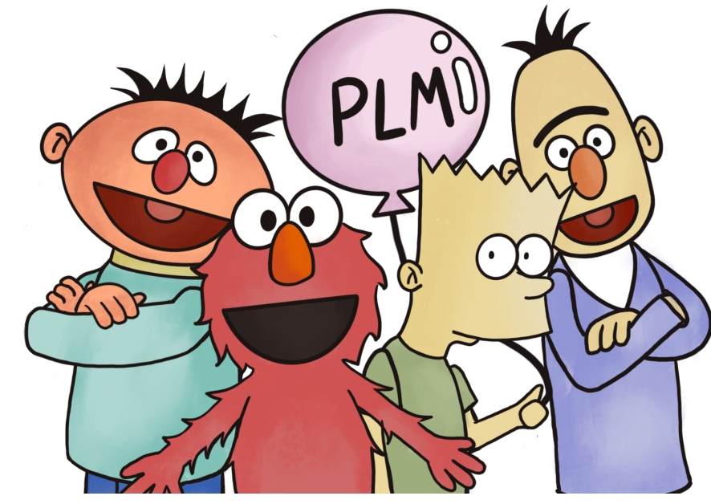

CS2916 · SJTU · 2025
Large Language Models
The 2025 course materials provide a structured path into modern language models and the research questions behind them.
Our teaching connects the foundations of large language models with the data, training, reasoning and evaluation practices used in current research.

The 2025 course materials provide a structured path into modern language models and the research questions behind them.